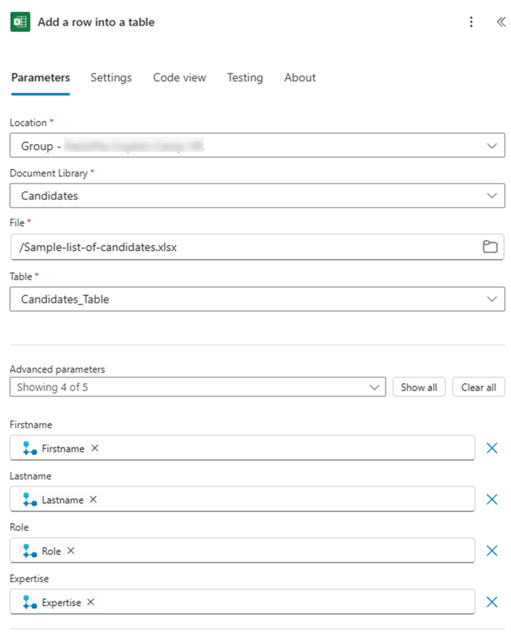

ラボ MCS3 - ツールの定義
このラボでは、Microsoft Copilot Studio でツールを作成する方法を学習します。ツールはエージェントのもう 1 つのコア構成要素です。ツールを使用すると、エージェントの機能を拡張し、外部 Power Platform コネクタ (ネイティブまたはカスタム)、外部 REST API、Power Automate フロー、MCP (Model Context Protocol) サーバーなどを追加できます。
Microsoft Copilot Studio で エージェント を構築したい場合は、次の ラボ を実施してください
Note
このラボは前のラボ ラボ MCS2 を基に構築されています。同じエージェントで作業を続け、新しい機能で強化できます。
ツールはグラフィカル デザイナーで作成できます。ツールを作成した後、詳細な微調整が必要な場合は低レベルのコード エディターで定義を編集することも可能です。
このラボで学習する内容:
- Power Platform コネクタを呼び出すツールの作成方法
- Power Automate フローを呼び出すツールの作成方法
- トピックからツールを呼び出す方法
エクササイズ 1 : Microsoft Copilot Studio でのツール作成
このエクササイズでは、ラボ MCS2 で作成したエージェントを強化し、SharePoint Online ドキュメント ライブラリに保存されている Excel スプレッドシートから架空の候補者リストを取得するために Excel Online を使用します。その後、同じスプレッドシートに新しい候補者を追加できる Power Automate フローを利用するツールを追加します。
ステップ 1: Power Platform コネクタの使用
新しいツールを作成するには、画面上部で 1️⃣ Tools タブを選択し、2️⃣ + Add a tool を選択します。

ツールの種類を選択するダイアログが表示されます。既定では Featured ツールがいくつかあり、Excel Online など一般的なサービスと連携できます。

+ New tool を選択して、次のオプションから新しいツールを一から作成することもできます。
- Prompt: 自然言語で記述したプロンプトを使用して構築した AI ツールを利用します。
- Agent flow: Power Automate フローを利用します ( ステップ 2 を参照)。
- Computer use: エージェントが Web やデスクトップ アプリを直接使用できるようにします。
- Custom connector: Power Platform カスタム コネクタを利用します。
- REST API: 外部 REST API を利用します。詳細は こちら を参照してください。
- Model Context Protocol: 外部 Model Context Protocol (MCP) サーバーのツールを利用します。

目的のオプションが Featured に見当たらない場合は All グループに切り替え、テキストで検索してください。
今回のステップでは、Featured ツール Excel Online (Business) を選択し、List rows present in a table を選択します。最初に Connection を選択し、Create new connection で外部コネクタに接続します。

アカウントでサインインし、Excel Online (Business) へのアクセスを許可します。接続が構成されると Add to agent または Add and configure コマンドが表示されます。

続いてツールを構成するページが表示されます。設定する内容は次のとおりです。
- Name: ツールの説明的な名前
- Description: ジェネレーティブ オーケストレーションがツールを使用するタイミングを判断するための自然言語の説明
- Inputs: ツールの入力引数 (必要に応じて)
- Completion: リクエストとユーザーへのレスポンスの処理方法
ツールを構成する前に、候補者リストを含む Excel スプレッドシートを準備します。次の リンク からサンプル Excel ファイルをダウンロードしてください。
ファイルを、Copilot Studio を使用している同じテナント内の SharePoint Teams サイトの Documents ライブラリにアップロードします。このドキュメントは Microsoft 365 Copilot によって生成された架空の候補者リストです。
- サイトの絶対 URL をコピー: 例
https://xyz.sharepoint.com/sites/contoso/ - ドキュメント ライブラリ名をコピー: 例
Shared documents - ファイル名をコピー: 例
Sample-list-of-candidates.xlsx
Microsoft Copilot Studio に戻り、ツール設定を完了します。

以下の設定を使用します。
- Name: List HR candidates
- Description: HR ポジションの候補者一覧
Inputs タブを選択し、入力引数を設定します。既定では必須引数すべてが Fill as プロパティで Dynamically fill with AI になっています。

各入力引数の Fill using 設定を Custom value に変更し、すべての引数に固定値を指定します。
固定値:
- Location: スプレッドシートを保存した SharePoint Online サイト コレクションの URL
例https://xyz.sharepoint.com/sites/contoso/ - Document Library: ドキュメント ライブラリ名
例Shared Documents - File: Excel ファイル名
例Sample-list-of-candidates.xlsx - Table:
Candidates_Table
サイト、ライブラリ、ファイル、テーブルは Copilot Studio の UI で参照できます。

画面右上の Save ボタンを選択してツールを保存します。
ステップ 2: 新しいツールのテスト
更新したエージェントを発行し、統合テスト パネルまたは Microsoft Teams で試してみましょう。
ラボ MCS2 でジェネレーティブ オーケストレーションを有効にしたため、次のようなプロンプトを入力するだけでツールを簡単に呼び出せます。
Show me the list of candidates for an HR role
Copilot Studio でジェネレーティブ オーケストレーションを使用し、テスト パネル内でプロンプトを実行すると、既定でアクティビティ マップが表示され、オーケストレーターの動作を確認できます。以下のスクリーンショットは先ほどのプロンプトのアクティビティ マップです。オーケストレーターはユーザーの意図を把握し、ステップ 1 で作成したツールを実行します。手動で設定した入力引数も確認できます。
Power Platform コネクタは有効な接続を必要とするため、エージェントは外部データ ソースを使用する前に Connect を求めます。

Connect を選択し、接続を有効化します。新しいブラウザー タブで現在のセッションのアクティブな接続一覧が表示され、Excel Online (Business) への接続が含まれています。Connect リンクを選択し、Create or pick a connection ダイアログで接続を確立します。接続が完了したらエージェントに戻り、Retry を選択してツールを実行します。テスト パネルに Excel スプレッドシートから取得した候補者リストが表示されます。

ここまでで完了です。次のステップに進みましょう。
ステップ 3: Agent flow の利用
このステップでは、Power Automate フローを利用するツールを作成します。ユーザー入力に基づき、新しい候補者を Excel スプレッドシートに追加するケースを想定します。Power Automate フローを呼び出すツールを作成し、Excel テーブルに新しい行を追加します。
作成手順: 画面上部で Tools タブ → + Add a tool を選択。今回は + New tool → Agent flow を選択します。Agent flows デザイナーが開き、新しいフローが表示されます。

フローには開始トリガー When an agent calls the flow と終了アクション Respond to the agent があらかじめ配置されています。Copilot Studio のツールは、これら 2 つのアクションの間でビジネス プロセスを実行し、必要に応じて入力を受け取り、レスポンスを返します。最初のアクションを選択してプロパティを編集し、入力引数を設定します。

候補者を追加できるよう、次の 4 つの入力パラメーターを設定します。
- Firstname: text
- Lastname: text
- Role: text
- Expertise: text
次に、2 つのアクションの間に Excel Online (Business) コネクタの Add a row into a table アクションを追加します。スプレッドシートを指定し、列フィールドとトリガーの入力パラメーターをマッピングします。アクション名は Add new candidate row に変更します。

終了アクション Respond to Copilot を選択し、プロパティを編集して Text 型の出力パラメーター Result を追加します。値には、入力パラメーターに基づいてメッセージを生成する式を設定します。

Save draft を選択し、Overview タブでフロー名を編集します。例: Insert new candidate for HR。フローを公開し、エージェントのツール画面に戻ります。再度ツール追加ダイアログを開き、Flow フィルターを選択すると作成した Agent flow が表示されます。見つからない場合は名前で検索してください。

新しいツールを選択し、Add and configure を選択して以下の設定を行います。
- Name: Insert new candidate for HR
- Description: HR 向け Excel スプレッドシートに新しい候補者を追加します
Save を選択するとツールが準備完了です。次のプロンプトでツールを呼び出してみましょう。
Insert a new candidate into the Excel spreadsheet of HR. The candidate firstname is John,
the lastname is White, the role is "HR Administrator", and the expertise is "Compliance".
前ステップ同様、初回は Excel Online への接続が必要です。Connect を選択し、接続後 Retry を選択してツールを実行します。

ツール実行後、Power Automate フローで設定したレスポンス メッセージが表示され、Excel スプレッドシートのテーブルに新しい候補者が追加されます。
エクササイズ 2 : トピック内からのツール呼び出し
このエクササイズでは、作成したツールをトピック内から呼び出します。
ステップ 1: トピックからツールを呼び出す
まず空のトピックを作成し、名前を Add a new candidate to Excel にします。ラボ MCS2 のエクササイズ 4 と同じ手順に従ってください。
トリガーの説明例:
This topic helps users to insert new candidates in the Excel spreadsheet of HR.
Triggering sentences can be: add a new a new row to the persistence storage.
簡潔にするため詳細はここでは扱いません。必要に応じてラボ MCS2 を参照してください。
以下は、Ask with adaptive card アクションで候補者情報を収集するためのアダプティブ カードの JSON です。
{
"type": "AdaptiveCard",
"body": [
{
"type": "TextBlock",
"size": "Medium",
"weight": "Bolder",
"text": "New HR Candidate Information"
},
{
"type": "Input.Text",
"id": "firstname",
"placeholder": "First Name"
},
{
"type": "Input.Text",
"id": "lastname",
"placeholder": "Last Name"
},
{
"type": "Input.Text",
"id": "current_role",
"placeholder": "Current Role"
},
{
"type": "Input.Text",
"id": "expertise",
"placeholder": "Expertise"
}
],
"actions": [
{
"type": "Action.Submit",
"title": "Submit"
}
],
"$schema": "http://adaptivecards.io/schemas/adaptive-card.json",
"version": "1.5"
}
その後、Add an tool グループから新しいツールを追加し、Tool タブで エクササイズ 1 - ステップ 3 で作成したツールを選択します。

次に、ツールの入力引数をアダプティブ カードで取得した変数にマッピングします。

各入力引数について + Set value を選択し、以下のように対応付けます。
- text: 名前
- text_1: 姓
- text_2: 現在の役職
- text_3: 専門分野
Copilot Studio のデータ バインディングを使用して、各入力引数にトピック レベル変数を割り当てます。最終的にツール アクションは次のようになります。

End current topic アクションを追加し、保存します。
ラボ MCS2 で作成した他のトピックを無効にし、次のプロンプトで新しいトピックを呼び出して Excel スプレッドシートに新しい候補者行を追加します。
Add a new a new row to the persistence storage
アダプティブ カードに情報を入力して送信すると、トピック経由でツールが実行され、Excel スプレッドシートに新しい候補者が追加されます。

おめでとうございます！
これでエージェントがツールをサポートしました。次のラボでは、Copilot Studio を使用して Microsoft 365 Copilot Chat 用の Declarative Agents を作成する方法を学習します。
ここから ラボ MCS4 を開始し、Microsoft 365 Copilot Chat 用の Declarative Agents を Copilot Studio で作成する方法を学びましょう。